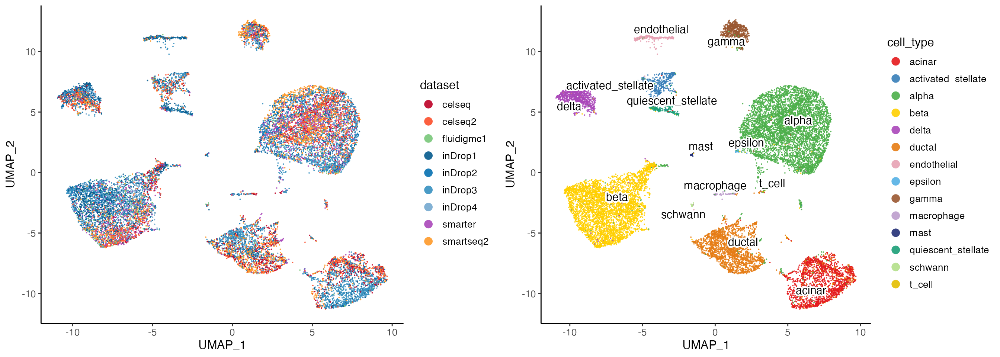

In rliger 2.1.0, we released a new cell factor loading alignment method which has been outperforming our previous quantile normalization method as well as many existing well known methods, in terms of the power of batch effect correction and conservation of biological information. In this vignette, we demonstrate how the performance was benchmarked with a number of metrics.
The benchmarking metrics aim at evaluating single-cell data integration methods and the generalized framework was proposed in original work in Luecken, M.D., Nat Methods 2022, by Theis Lab. In this vignette, we will do the following steps to benchmark our new method and compare it with other methods:
- Load the dataset that was used in the original work
- Run LIGER’s new method
- Calculate benchmarking metrics on the new result, using Python package scib from Theis Lab.
- Rank the new method with existing methods
Dataset
The SCIB (Single-cell integration benchmarking) paper benchmarked single-cell data integration methods on a number of datasets with various complexities. Here, we show how to benchmark LIGER’s new method on the human pancreas dataset.
The pancreas integration task consists of batches sequenced with different technologies, including CEL-Seq, Fluidigm C1, inDrop, Smart-Seq and etc. Moreover, the cell composition in each batch varies. For example, the CEL-Seq and CEL-Seq2 batches contributed by Muraro MJ 2016 and Grün D 2016, respectively, pooled cells using the Islets of Langerhans from human cadaveric pancreata at atlas level and contains main and rare pancreatic cell types. While the SMARTer batch contributed by Xin Y 2016, only contains the main pancreatic cell types.
SCIB has provided the cleaned dataset with cell type annotation unified across batches. The dataset is ready for download and is presented in an AnnData object stored in the H5AD file listed below:
Click to download and save at working directory: human_pancreas_norm_complexBatch.h5ad
Python environment
The SCIB framework is wrapped in a Python package scib and
the metric calculation can be easily done with a function call to a
prepared AnnData object. To install the scib package, we
recommand creating a conda environment and install the package with
pip.
The commands below shows an example of how to create the conda environment and install the package in system terminal or command-line prompt (NOT R COMMANDS). Users can freely explore other ways to get the package installed.
Preprocessing
Here we use SCIB’s method to identify the highly variable genes
(HVGs) before running LIGER integration. While LIGER has its own HVG
selection strategy, we decided to use SCIB’s method to ensure a fair
comparison with other methods, which were benchmarked with the same set
of HVGs. This method requests for n (default 2,000) top
variable genes from each batch first. Then, the list of HVGs was ranked
first by the number of batches in which the genes were highly variable
and second by the mean dispersion parameter across batches. Finally, the
top n genes were selected for downstream use.
In a Python session, import the necessary modules and load the dataset downloaded from the link above.
# Python code
import scib
import scanpy as sc
adata = sc.read_h5ad("human_pancreas_norm_complexBatch.h5ad")
adata## AnnData object with n_obs × n_vars = 16382 × 19093
## obs: 'tech', 'celltype', 'size_factors'
## layers: 'counts'From the printed information, the adata.obs column
“tech” represents the batch information.
Next, we run the HVG selection method from scib.
## Using 65 HVGs from full intersect set
## Using 221 HVGs from n_batch-1 set
## Using 274 HVGs from n_batch-2 set
## Using 269 HVGs from n_batch-3 set
## Using 349 HVGs from n_batch-4 set
## Using 435 HVGs from n_batch-5 set
## Using 387 HVGs from n_batch-6 set
## Using 2000 HVGsThe selected HVGs are stored in a list object
hvg. We simply write the list to a text file,
with one gene per line without separators, so that we can load it back
to R later easily.
Construct liger object
Back to R, now we can load the H5AD data to R and construct a liger object. There is no single function that can load the H5AD file directly to a liger object due to the fact that people may have very distinct ways to construct an AnnData object. Here we show particularly how the pancreas dataset is manually loaded into a liger object, step by step.
First, load the necessary R libraries
The R package hdf5r provides an interface to interact with HDF5 based files, which is the base format of an H5AD file. The rliger package is the R implementation of LIGER.
Secondly, open the H5AD file so we can extract necessary data.
h5ad <- H5File$new("human_pancreas_norm_complexBatch.h5ad", mode = "r")With the connection to the H5AD file open, we can subsequently extract the raw counts and metadata. Notice that the raw counts are stored in a dense matrix in the H5AD file, which is very rare in practice for single-cell data. We need to convert it to sparse matrix before constructing the liger object. Please view hdf5r vignette for more information of its usage.
# Loading the raw counts from H5AD file
h5ad.raw <- h5ad[['layers/counts']][,]
h5ad.raw.rownames <- h5ad[['var/_index']][]
h5ad.raw.colnames <- h5ad[['obs/_index']][]
dimnames(h5ad.raw) <- list(h5ad.raw.rownames, h5ad.raw.colnames)
# Convert it liger compatible sparse matrix
h5ad.raw <- as(h5ad.raw, "CsparseMatrix")
# Extract necessary metadata
h5ad.meta.dataset <- factor(
h5ad[['obs/__categories/tech']][][h5ad[['obs/tech']][] + 1],
levels = h5ad[['obs/__categories/tech']][]
)
h5ad.meta.cell_type <- factor(
h5ad[['obs/__categories/celltype']][][h5ad[['obs/celltype']][] + 1],
levels = h5ad[['obs/__categories/celltype']][]
)
pancreas.meta <- data.frame(
barcode = h5ad.raw.colnames,
dataset = h5ad.meta.dataset,
cell_type = h5ad.meta.cell_type,
row.names = paste0(h5ad.meta.dataset, "_", h5ad.raw.colnames)
)Now, with all data loaded, we can head to constructing the liger
object. The raw counts data is presented as a single matrix with all
batches merged. In this case, we call as.liger() function
instead of using createLiger() which is defined for
creating liger object from a list of matrices, each a batch. Please view
our guide for importing data for more
guide in detail.
# Construct liger object, from the sparse matrix containing all batches
lig <- as.liger(h5ad.raw, datasetVar = pancreas.meta$dataset)Lastly, insert other necessary metadata and the previously selected
HVGs into the liger object. Note that we assigned the
rownames
# Match the metadata with the liger object
pancreas.meta.ordered <- pancreas.meta[colnames(lig),]
# Insert metadata into liger object
lig$cell_type <- pancreas.meta.ordered$cell_type
defaultCluster(lig) <- "cell_type"
# Load previously identified HVGs and set to liger object
hvg <- readLines("pancreas_hvgs.txt")
varFeatures(lig) <- hvg
lig## An object of class liger with 16382 cells
## datasets(9): celseq (1004 cells), celseq2 (2285 cells), fluidigmc1 (638 cells), ..., smartseq2 (2394 cells)
## cellMeta(8): dataset, barcode, nUMI, ..., cell_type
## varFeatures(2000): SPP1, PPY, RBP4, ..., SYN1
## dimReds(0):Run liger integration
The following code chunk simply run the LIGER integration pipeline.
For a more detailed guidance on running LIGER, please refer to our basic tutorial. A few notes
to mention here. We don’t run
selectGenes() function as we have already selected HVGs.
For runIntegration() function, argument k
represents the number of ranks we factorize the batches into. These can
be interpreted as metagenes that represents biological factors. The
number of factors is arbitrarily chosen and can be adjusted based on the
dataset. Higher k may be selected when complex composition
is expected from the whole dataset. Lastly, we need to set
method = "centroidAlign" in alignFactors()
function to use the new alignment method.
lig <- lig %>%
normalize() %>%
scaleNotCenter() %>%
runIntegration(k = 40) %>%
alignFactors(method = "centroidAlign")After the integration, we can optionally visualize the data by creating UMAP dimensionality reduction embedding using the integrated data. And color the UMAP either by batch source or by cell type annotation.
lig <- runUMAP(lig, minDist = .3)
options(ligerDotSize = 0.7)
p1 <- plotDatasetDimRed(
lig,
colorValues = c(
"#BD0026", "#FC4E2A", # For celseq and celseq2,
"#78C679", # For fluidigmc1
"#045A8D", "#0570B0", "#3690C0", "#74A9CF", # For inDrop1-4
"#AA47B9", # For smarter
"#FE9929" # For smartseq2
)
)
p2 <- plotClusterDimRed(lig, legendNCol = 1)
cowplot::plot_grid(p1, p2, ncol = 2)
Export to H5AD
In order to utilize scib prepared metric calculation
functions, we need to export the result from the liger object to an H5AD
file. This functionality has been implemented in a single function call
to ligerToH5AD() which is not part of
rliger package, but need to be loaded via source code.
For usage of the function, please call help.ligerToH5AD()
after loading the source code.
# Load the function from source code
source(system.file("extdata/ligerToH5AD.R", package = "rliger"))
# Call the loaded function
ligerToH5AD(lig, "human_pancreas_liger_integrated.h5ad")Run SCIB metrics
Back to a Python session, we can now work on the integrated data and start to calculate all SCIB metrics.
First, import necessary modules and load the integrated data.
# Python code
import scib
import scanpy as sc
adata = sc.read_h5ad("human_pancreas_liger_integrated.h5ad")
adata## AnnData object with n_obs × n_vars = 16382 × 2000
## obs: 'dataset', 'barcode', 'nUMI', 'nGene', 'mito', 'ribo', 'hemo', 'cell_type'
## var: 'name'
## obsm: 'X_h', 'X_h_norm', 'X_umap'
## varm: 'W'Prespecify a few variables that will be re-used as parameters for
many of the metric calculation functions. label_key refers
to the column name in adata.obs for the ground truth cell
type annotation. We simply use what was provided in the original data,
as this has been curated by the original SCIB work.
batch_key is the column in adata.obs that
represents the batch information. use_rep and
embed are the same thing and they refer to the
low-dimensional representation of the integrated data, located in
adata.obsm.
One more preprocessing that is crucial to calculating part of the metrics is to obtain a clustering result that is based on the integration. scib provides a optimized clustering method that tries a sequence of resolutions and returns the clustering result with the highest NMI score compared to the ground truth. An NMI score evalutates the agreement between two categorical variables and will be introduced later.
# Python code
sc.pp.neighbors(adata, use_rep=use_rep)
scib.metrics.cluster_optimal_resolution(adata, label_key=label_key, cluster_key='leiden')## resolution: 0.1, nmi: 0.880045267743085
## resolution: 0.2, nmi: 0.8888347309477597
## resolution: 0.3, nmi: 0.87768954528099
## resolution: 0.4, nmi: 0.8485513798621696
## resolution: 0.5, nmi: 0.8085522042477449
## resolution: 0.6, nmi: 0.7474496433636655
## resolution: 0.7, nmi: 0.739544088692595
## resolution: 0.8, nmi: 0.7305861030158917
## resolution: 0.9, nmi: 0.7189902627405381
## resolution: 1.0, nmi: 0.7002328173180308
## resolution: 1.1, nmi: 0.6926906848054561
## resolution: 1.2, nmi: 0.6745390302067559
## resolution: 1.3, nmi: 0.6771536766291232
## resolution: 1.4, nmi: 0.6632363867725439
## resolution: 1.5, nmi: 0.6576928612452401
## resolution: 1.6, nmi: 0.6397036519791898
## resolution: 1.7, nmi: 0.6404473674684553
## resolution: 1.8, nmi: 0.6437690859294083
## resolution: 1.9, nmi: 0.6295050082838636
## resolution: 2.0, nmi: 0.6302577443586709
## optimised clustering against cell_type
## optimal cluster resolution: 0.2
## optimal score: 0.8888347309477597Lastly, we also need the original unintegrated data, since some of the metrics works by comparing the integrated data against it. We load the data into another AnnData object and do some cleaning to match the integrated data.
# Python code
adata_unintegrated = sc.read_h5ad("human_pancreas_norm_complexBatch.h5ad")
# Update `adata_unintegrated` .obs_name, by concatenating `adata_unintegrated.obs['tech']` and `adata_unintegrated.obs_names`, sep with '_'
new_obs_names = []
for tech, obs_name in zip(adata_unintegrated.obs['tech'], adata_unintegrated.obs_names):
new_obs_names.append(tech + '_' + obs_name)
adata_unintegrated.obs_names = new_obs_names
# Reorder `adata_unintegrated` to match `adata`
adata_unintegrated = adata_unintegrated[adata.obs_names,]
# Rename columns in `adata_unintegrated.obs` to match `adata.obs`
adata_unintegrated.obs = adata_unintegrated.obs.rename(columns={'tech': 'dataset', 'celltype': 'cell_type'})Now we can start to compute each metrics using functions prepared within scib package. We briefly describe what each metric means and how it is calculated. For more details of them, please refer to the Method section of the original SCIB paper.
Metrics for batch effect removal
Batch PCR
PCR (principal component regression) method calculates the \(R^2\) from a linear regression of the batch variable onto each principal component. By multiplying the \(R^2\) with the variance explained for each principal component, PCR can then derive the total variance explained by the batch variable.
pancreas_pcr_batch = scib.metrics.pcr_comparison(
adata_pre=adata_unintegrated,
adata_post=adata,
covariate=batch_key,
embed=embed
)
pancreas_pcr_batch## 0.9931731661673961Batch ASW
ASW (average silhouette width) is generally a metric that measures within-group distances of a cell and the between-group distances of that cell to the closest group. Averaging over all silhouette widths of a set of cells yields the ASW, so that a higher ASW indicates better separation and lower ASW indicates stronger mixing. By grouping cells by their batch information within each cell type, reversed ASW scores can be utilized to evaluate how well the batch labels are mixed.
pancreas_batch_asw = scib.metrics.silhouette_batch(adata=adata, batch_key=batch_key, label_key=label_key, embed=embed)## mean silhouette per group: silhouette_score
## group
## acinar 0.817259
## activated_stellate 0.881205
## alpha 0.906360
## beta 0.908556
## delta 0.892427
## ductal 0.868090
## endothelial 0.807412
## epsilon 0.614904
## gamma 0.909407
## macrophage 0.709292
## mast 0.702113
## quiescent_stellate 0.741880
## schwann 0.704278
## t_cell 0.644153## 0.7933811059905438Graph iLISI
LISI (local inverse Simpson index) scores are computed from neighborhood lists per node from integrated kNN graphs. It counts the number of unique labels in the neighborhood of a cell, so that a number closer to total number of labels indicates better mixing and 1 indicates perfect separation. By looking at the the batch labels, iLISI scores can be used to evaluate how well the batch labels are mixed.
Note that since the final iLISI score is averaged for all cells, integration tasks that contain batches with distinct cell type composition might not necessarily obtain a high iLISI score.
pancreas_graph_ilisi = scib.metrics.ilisi_graph(adata=adata, batch_key=batch_key, type_="embed", use_rep=use_rep, n_cores=4)
pancreas_graph_ilisi## 0.3073894205861533Graph connectivity
This method first subsets the kNN graph of the integrated data to contain only cells of one cell type, and then compares the size of the largest connected component against the size of the whole subset graph. So that a higher connectivity score indicates better mixing with each cell type.
pancreas_graph_connectivity = scib.metrics.graph_connectivity(adata=adata, label_key=label_key)
pancreas_graph_connectivity## 0.9750180591653kBET
kBET (Büttner, M. 2019) determines whether the label composition of the neighborhood of a cell is similar to the expected (global) label composition.
pancreas_kBET = scib.metrics.kBET(adata=adata, batch_key=batch_key, label_key=label_key, type_='embed', embed=embed)## R was initialized outside of rpy2 (R_NilValue != NULL). Trying to use it nevertheless.
## Adding diffusion to step 4
## Adding diffusion to step 4
## Adding diffusion to step 4
## Adding diffusion to step 5
## Adding diffusion to step 6
## t_cell consists of a single batch or is too small. Skip.## 0.5248958996458675Metrics for bio conservation
NMI and ARI
NMI (normalized mutual information) and ARI (adjusted Rand index) both compares the overlap of two clusterings. Here we compare the clustering result we previously obtained from the integrated data against the cell type labeling, with higher scores indicating better agreement.
pancreas_nmi = scib.metrics.nmi(adata=adata, cluster_key='leiden', label_key=label_key)
pancreas_nmi## 0.8888347309477597pancreas_ari = scib.metrics.ari(adata=adata, cluster_key='leiden', label_key=label_key)
pancreas_ari## 0.9284316085505634Cell type ASW
Recall that we used a reversed ASW measurement for batch effect removal, here we group cells by the cell type labels. Therefore, a higher ASW indicates the original cell types can be properly separated after integration.
pancreas_cell_type_asw = scib.metrics.silhouette(adata=adata, label_key=label_key, embed=embed)
pancreas_cell_type_asw## 0.6222552433843831F1 score for isolated label
To evaluate how well the integration methods deal with cell types shared by few batches, the SCIB work developed several metrics that focus on the isolated labels. The isolated label is defined as the label that presents in the least number of batches.
F1 score is a weighted mean of precision and recall of a clustering. The cluster assignment of the isolated label is optimized for a range a resolutions and the optimal F1 score for the isolated label is reported. A value of 1 1 shows that all of the isolated label cells and no others are captured in a cluster.
pancreas_isolated_label_F1 = scib.metrics.isolated_labels_f1(adata=adata, label_key=label_key, batch_key=batch_key, embed=embed)## isolated labels: no more than 4 batches per label
## Compute neighbors on rep X_h_norm
## t_cell: 0.5185185185185185## 0.5185185185185185ASW for isolated label
For the isolated label as defined in the last metric, the ASW score for a cell is calculated by comparing its distances within the isolated label versus in the non-isolated labels. After scaling, a higher isolated label ASW score indicates better separation of the isolated label from the rest of the data.
pancreas_isolated_label_silhouette = scib.metrics.isolated_labels_asw(adata=adata, label_key=label_key, batch_key=batch_key, embed=embed)## isolated labels: no more than 4 batches per label
## t_cell: 0.7445839795169722## 0.7445839795169722Graph cLISI
Recall that we used iLISI for batch effect removal, here we use look at the cell type labeling within the neighborhood of each cell. While less unique labels in the neighbor hood indicates better separation of cell types, the score is then scaled in a way that a higher cLISI score indicates better separation of cell types.
pancreas_graph_clisi = scib.metrics.clisi_graph(adata, label_key=label_key, type_='embed', use_rep=use_rep, n_cores=4)
pancreas_graph_clisi## 0.9995901383991688Cell cycle conservation
A cell-cycle score is first computed for each respective cell-cycle phase and for each cell. Then for each batch, the method computes the variance contribution of the resulting S and G2/M phase scores using PCR. The differences in variance before and after integration were aggregated into a final score.
pancreas_cell_cycle_conservation = scib.metrics.cell_cycle(adata_pre=adata_unintegrated, adata_post=adata, batch_key=batch_key, embed=embed, organism='human')
pancreas_cell_cycle_conservation## 0.4774870990333798HVG conservation
By comparing the overlap between highly variable genes (HVGs) that can be identified from unintegrated data and those identified from batch-corrected data, the HVG conservation score can servea as a proxy for the preservation of the biological signal. However, this metric can only be applied for integration methods that return feature expression matrices.
Summary
Now that we’ve calculated all the metrics, we can print them out to have a look and save them to a CSV file for further analysis.
# Python code
import pandas as pd
pancreas_all_metrics = {
"pancreas_pcr_batch": pancreas_pcr_batch,
"pancreas_batch_asw": pancreas_batch_asw,
"pancreas_graph_ilisi": pancreas_graph_ilisi,
"pancreas_graph_connectivity": pancreas_graph_connectivity,
"pancreas_kBET": pancreas_kBET,
"pancreas_nmi": pancreas_nmi,
"pancreas_ari": pancreas_ari,
"pancreas_cell_type_asw": pancreas_cell_type_asw,
"pancreas_isolated_label_F1": pancreas_isolated_label_F1,
"pancreas_isolated_label_silhouette": pancreas_isolated_label_silhouette,
"pancreas_graph_clisi": pancreas_graph_clisi,
"pancreas_cell_cycle_conservation": pancreas_cell_cycle_conservation
}
for metric, score in pancreas_all_metrics.items():
print(f"{metric}: {score}")## pancreas_pcr_batch: 0.9931731661673961
## pancreas_batch_asw: 0.7933811059905438
## pancreas_graph_ilisi: 0.3073894205861533
## pancreas_graph_connectivity: 0.9750180591653
## pancreas_kBET: 0.5248958996458675
## pancreas_nmi: 0.8888347309477597
## pancreas_ari: 0.9284316085505634
## pancreas_cell_type_asw: 0.6222552433843831
## pancreas_isolated_label_F1: 0.5185185185185185
## pancreas_isolated_label_silhouette: 0.7445839795169722
## pancreas_graph_clisi: 0.9995901383991688
## pancreas_cell_cycle_conservation: 0.4774870990333798Ranking with existing scores
In the original work of SCIB, the scores for a single method may not be directly useful to see how well the method overally performs compared to others. Therefore, the authors proposed a way to scale the scores and calculate an overall score with all methods’ scores together. The overall score is calculated as a weighted sum of the batch correction and bio conservation scores. The batch correction score and the bio conservation score are calculated as the average of the scaled scores of each single metrics that belong to the category. The authors applied min-max scaling to the scores of each metric, so that the scores are in the range of 0 to 1. In this way, the difference of performance between methods can be better reflected.
\[ \begin{aligned} score^*_{i,j} &= \frac{score_{i,j} - min(score_{,j})}{max(score_{,j}) - min(score_{,j})} \\ batch_{i} &= \frac{1}{|BATCH|}\sum_{j}^{BATCH} score^*_{i,j} \\ bio_{i} &= \frac{1}{|BIO|}\sum_{j}^{BIO} score^*_{i,j} \\ Overall_i &= 0.6 \times bio_{i} + 0.4 \times batch_{i} \end{aligned} \]
Assume we put the scores for all methods and all metrics in a matrix, where a row is for all metrics of a method, and a column is the scores of a metric listed with all methods. The above formula can be applied to calculate the overall score for each method. \(score\) is the original score matrix, \(i\) is the row index for a method, \(j\) is the column index for a metric, \(score^*_{i,j}\) is the scaled score for method \(i\) and metric \(j\). \(BATCH\) is the set of batch correction metrics, \(BIO\) is the set of bio conservation metrics. \(|BATCH|\) is the number of batch correction metrics we have in total, for example, 5 for what scib currently provides. Similarly, \(|BIO|\) is the number of bio conservation metrics, 8 in our case. \(batch_{i}\) is the batch correction score for method \(i\), \(bio_{i}\) is the bio conservation score for method \(i\), and \(Overall_i\) is the overall score for method \(i\).
Load all other scores
Based on what we described above, we need to load the scores the SCIB work already calculated and insert our new scores into the pool to have all methods re-ranked.
The full benchmarking scores for the human pancreas dataset task is available in the Supplementary Information of SCIB’s orginal publication, freely available as Supplementary Data 1.
Click to download Supplementary Data 1 and save to working directory: 41592_2021_1336_MOESM3_ESM.xlsx
Now we need to load a few more R libraries for data manipulation.
Given that the supplementary data provided is an Excel file with
multiple sheets, each sheet is for a different dataset task. We need to
also locate which sheet is for the human pancreas dataset task.
excel_sheets() function from readxl package can
help us with this.
library(readxl)
library(dplyr)
excel_sheets("41592_2021_1336_MOESM3_ESM.xlsx")## [1] "Batch_vs_Bio_RNA_tasks" "immune_cell_hum"
## [3] "simulations_1_1" "mouse_brain_atac_peaks_large"
## [5] "mouse_brain_atac_peaks_small" "mouse_brain_atac_genes_large"
## [7] "mouse_brain_atac_windows_small" "mouse_brain_atac_windows_large"
## [9] "mouse_brain_atac_genes_small" "pancreas"
## [11] "mouse_brain" "mouse_brain_atac_large"
## [13] "mouse_brain_atac_small" "lung_atlas"
## [15] "simulations_2" "immune_cell_hum_mou"The scores for the human pancreas dataset task is stored in sheet 10
from listed above. Now we can load the sheet into one
data.frame object in R. Note that there are NA
values in the result, mainly due to the fact that some metrics are not
applicable to some methods. For example, the HVG conservation metric is
not applicable to LIGER. Be sure to tell the read_excel()
function how to handle these values.
pancreas_scores <- read_excel(
path = "41592_2021_1336_MOESM3_ESM.xlsx",
sheet = 10,
na = "NA"
)
pancreas_scores <- as.data.frame(pancreas_scores)Here is how the table looks like:
Insert scores for new LIGER
Now we load back the scores we just calculated for LIGER’s new method and insert it to the full table before we can scale the scores and obtain the final overall scores.
liger_scores <- read.csv("pancreas_liger_scores.csv")
# Make a one-row data.frame that matches to the columns from the full table
liger_scores_reformat <- data.frame(
# Dataset, Method, Output, Feaetures, Scaling, Overall
"pancreas", "LIGER2", "embed", "HVG", "scaled", NA,
# Overall score above left as NA, yet to be calculated
# Batch score, and individual batch metrics
# Batch score left as NA, yet to be calculated
NA, liger_scores$pancreas_pcr_batch, liger_scores$pancreas_batch_asw,
liger_scores$pancreas_graph_ilisi, liger_scores$pancreas_graph_connectivity,
liger_scores$pancreas_kBET,
# Bio score, and individual bio metrics
# Bio score left as NA, yet to be calculated
NA, liger_scores$pancreas_nmi, liger_scores$pancreas_ari,
liger_scores$pancreas_cell_type_asw, liger_scores$pancreas_isolated_label_F1,
liger_scores$pancreas_isolated_label_silhouette,
liger_scores$pancreas_graph_clisi,
liger_scores$pancreas_cell_cycle_conservation, NA
# HVG score left as NA, not applicable
)
colnames(liger_scores_reformat) <- colnames(pancreas_scores)
all_scores <- rbind(pancreas_scores, liger_scores_reformat)Calculate scaled scores
Following the formula described earlier, we then calculate the scaled
scores for each metric, derive the average batch score and average bio
score for each method. The scaleMinMax() function is
defined in short below so it can be apply()ed to each
column (MARGIN = 2) in a neat way.
# x - expect to be a column from the score table, containing the scores for a
# metric, from all methods
# `na.rm = TRUE` indicates that we want to ignore NA values when calculating min
# and max
scaleMinMax <- function(x) {
(x - min(x, na.rm = TRUE))/(max(x, na.rm = TRUE) - min(x, na.rm = TRUE))
}
# Calculate batch scores
batch_scores <- all_scores[, 8:12]
batch_scores.scaled <- as.data.frame(
apply(X = batch_scores, MARGIN = 2, FUN = scaleMinMax)
)
all_scores$`Batch Correction` <- rowMeans(batch_scores.scaled, na.rm = TRUE)
# Calculate bio scores
bio_scores <- all_scores[, 14:21]
bio_scores.scaled <- as.data.frame(
apply(X = bio_scores, MARGIN = 2, FUN = scaleMinMax)
)
all_scores$`Bio conservation` <- rowMeans(bio_scores.scaled, na.rm = TRUE)Overall ranking
Lastly, we can now reach to the overall score for each method and have our new method ranked among all others.
# Calculate overall scores
all_scores$`Overall Score` <- 0.6*all_scores$`Bio conservation` + 0.4*all_scores$`Batch Correction`
# Rank all methods by overall score
all_scores <- all_scores[order(all_scores$`Overall Score`, decreasing = TRUE),]
rownames(all_scores) <- NULLNow we can see the updated overall scores and the new ranking.